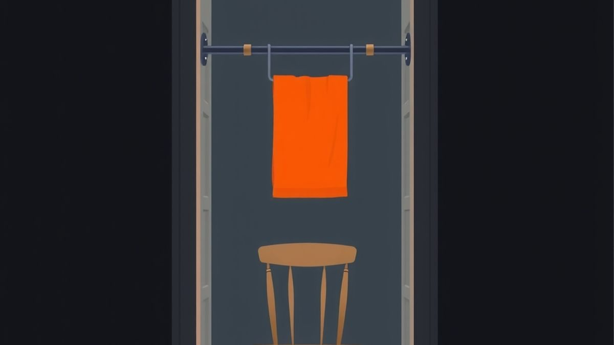
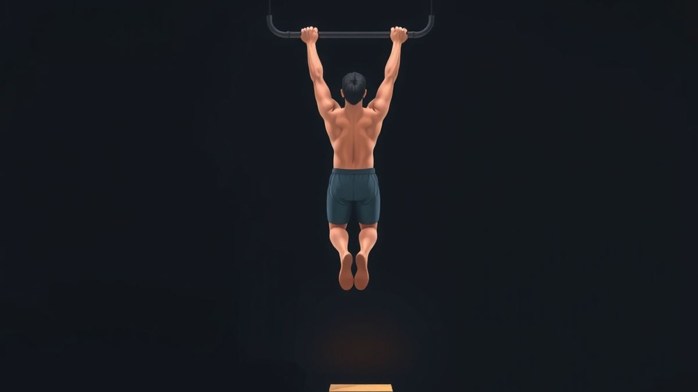
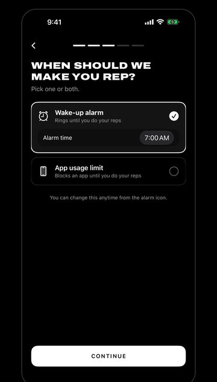

How to Do Your First Pull-Up (An 8-Week Plan From Zero)
Can't do a single pull-up? How to do your first pull-up from zero: hangs, rows, slow negatives and assisted reps, with an 8-week plan and honest timing.

TL;DR
- A pull-up is hard because your back and arms lift almost your whole body weight, and there's no easy setting built in.
- Build it in pieces: dead hang, scapular pull, row, top hold, slow negative, assisted pull-up. Move up a step only when you pass its test.
- Train three days a week, 15–20 minutes. Repeating a week is normal.
- A chin-up (palms facing you) is usually easier and is a fine first rep.
- Your first rep could take weeks or months. Both are normal; keep passing the tests.
The pull-up bar went up in the doorway in January. It has held a towel, two hoodies and a tote bag since.
Every few weeks you grab it, hang there, bend your elbows as hard as you can, and move about an inch. Then you let go and pretend you were stretching.
That inch is not a character flaw. A pull-up asks your back and arms to lift nearly your whole body weight straight up, with nothing to push against. It's one of the hardest bodyweight moves there is, and almost nobody gets it by trying the full thing over and over.
This is how to do your first pull-up when you're starting at zero: a ladder of easier moves that each train one piece of the pull-up, a simple test for when to move up, and an 8-week plan of three short sessions a week. All you need is a bar and a sturdy chair.
Why your first pull-up is so hard
With a push-up, you can raise your hands and the exercise gets lighter. A pull-up doesn't have that dial built in. Your feet are off the floor, so the bar is holding all of you, and your back and arms have to move all of you.
That's why strength alone doesn't settle it. In a 2003 University of Dayton study, college-age women who couldn't do a pull-up trained with weights and cardio for about three months. They got clearly stronger, but press coverage of the study reported that only 4 of the 17 managed a full pull-up by the end. The ones who did had more strength relative to their size.
Take two things from that small, older study. First, if a plan online promises your first pull-up in 30 days, it might happen, and it might take several months. Neither means you're doing it wrong. Second, the training that works best is the pull-up itself, in pieces. That's what the ladder below is.
How to do your first pull-up: the six-step ladder
Each step trains one part of the pull-up. Start at the first step you can't yet pass, and move up only when you pass its test.
| Step | What it trains | Move up when you can do |
|---|---|---|
| 1. Dead hang | Grip and shoulders under load | 3 hangs of 30 seconds |
| 2. Scapular pull | The first inch of the pull | 3 sets of 8 slow reps |
| 3. Row | Pulling muscles with part of your weight | 3 sets of 10 with your body fairly low |
| 4. Top hold | Strength at the top, where your chin clears the bar | 3 holds of 10 seconds |
| 5. Slow negative | The whole range, lowering only | 3 sets of 3, each taking about 5 seconds |
| 6. Assisted pull-up | The full pull, with help from your feet or a band | 3 sets of 5 with only a little help |
You'll usually be working on two or three steps at once. That's on purpose: hangs and scapular pulls stay in as a warm-up long after you've passed them.
1. Dead hang
Grab the bar with your palms facing away, hands just wider than your shoulders. Lift your feet or bend your knees and hang with straight arms. Breathe. Step down before your grip gives out, not after.
Easier: keep your toes on a chair so the bar only takes part of your weight. Hanging is also a good test of your bar. If anything creaks or shifts, stop and fix it before you go further.

2. Scapular pull
From a dead hang, keep your arms straight and pull your shoulders down, away from your ears, so your body rises an inch or two. Hold for a second, then lower slowly back to the hang. That small movement is how every pull-up starts.
Easier: toes on the chair again. If you feel it in your neck instead of under your armpits, make the movement smaller.
3. Row
Find a sturdy bar around hip height: a low bar at a playground, a gym's Smith machine or a fixed rail. Hang under it with your heels on the ground and your body in a straight line, then pull your chest to the bar and lower slowly.
Easier: walk your feet in so you're more upright. Harder: walk them out so you're closer to the floor. Don't row from a table, chair back or anything that can tip or slide. If you have no low bar, skip this step and do an extra set of negatives later on.
4. Top hold
Stand on the chair so your chin is already above the bar. Grip it, squeeze your elbows down to your sides, and lift your feet. Hold as long as you can stay up, then step back down to the chair. Don't drop.
5. Slow negative
From the same top position, lift your feet and lower yourself as slowly as you can, counting to five, until your arms are straight. Step back up to the chair and reset. Lowering is the part of a pull-up you can already do before you can pull, so it's how you get time in the full range of motion.
Easier: if you drop the bottom half, keep one foot lightly on the chair. Negatives make most people sore for a day or two at first, so start with 2 or 3 reps, not 10.
6. Assisted pull-up
Put a sturdy chair under the bar, slightly behind you. Hang with one or both feet on it and pull, pushing through your feet only as much as you need. Over the weeks, push less. A resistance band looped over the bar and under a foot or knee does the same job; choose a lighter band as you get stronger.
The 8-week first pull-up plan
Train three days a week with a day off in between, like Monday, Wednesday and Friday. Rest a minute or two between sets. Each session takes about 15 to 20 minutes. Stop every set with a rep or a few seconds left in you.
The weeks are a guide. The rule that matters: pass a step's test, then move on. Can't pass it yet? Repeat the week. That's progress too.
| Weeks | Each session | Easier if needed |
|---|---|---|
| 1–2 | 3 dead hangs of 10–30 s. 3 × 5–8 scapular pulls. 3 × 8–12 rows. | Toes on the chair for hangs and scapular pulls; rows more upright |
| 3–4 | 2 dead hangs. 2 × 8 scapular pulls. 3 × 8–10 rows, a little lower. 3 top holds of 5–10 s. | Shorter holds; keep rows where they were |
| 5–6 | Warm-up: 1 hang, 1 set of scapular pulls. 3 × 3 slow negatives. 3 × 5 assisted pull-ups. 2 × 10 rows. | 2 × 2 negatives; more help from your feet |
| 7–8 | Warm-up as above. Fresh, first thing: one pull-up attempt. Then 3 × 3 negatives, 3 × 5 assisted with less help. | Skip the attempt and repeat weeks 5–6 |
Pulling three days a week covers your back and arms. The US Physical Activity Guidelines recommend muscle-strengthening activity for all the major muscle groups on at least two days a week, so add some squats or push-ups to these sessions too.
Form that makes every rep count
- Start from straight arms and finish with your chin over the bar. Half reps feel like progress and don't add up to a pull-up.
- Shoulders down before you bend your elbows. That's the scapular pull, built into every rep.
- Body still. Squeeze your glutes and keep your legs together. No swinging or kicking; save the swinging styles for much later, if ever.
- Lower under control. Don't drop from the top. Dropping is hard on your shoulders and elbows and skips half the training.
- Bar safety. Install a doorway bar exactly as its instructions say, check it every time, and never hang from a door frame or curtain rail without one.
Pull-up or chin-up: which first?
A pull-up uses an overhand grip, palms facing away. A chin-up uses an underhand grip, palms facing you. For most people the chin-up is easier.
There's a reason. In a 2010 study of 25 adults, researchers measured muscle activity during both. The lats, the big back muscles, worked hard in both versions, but the biceps and chest were significantly more active in the chin-up. More muscle helping out usually means an easier rep.
So it's fine to make your first rep a chin-up, then take the same plan back to the overhand grip. If your bar has handles where your palms face each other, try that grip too; many people find it kindest on their shoulders.
After your first rep
Your first full pull-up will probably be slow and a bit ugly. If you started from straight arms, got your chin over the bar and didn't swing, it counts.
Don't chase five the same day. For the next couple of weeks, start each session with two or three single reps, resting a full minute or two between them, then finish with negatives and assisted reps. Singles turn into doubles, then sets of three.
Once you have a few clean reps, try spreading easy single reps through the day, like greasing the groove. It's how a lot of people build pull-ups at home without a long workout.
Questions people ask
How long does it take to do your first pull-up?
Honestly, nobody can give you a single number. Someone who can already do a few assisted reps might get there in a few weeks. Starting from a 10-second hang, it can take months. The Dayton study above suggests three months of general strength training isn't always enough, which is why this plan trains the pull-up itself. Pass the tests in order and you'll know you're closer every week.
Can I practice pull-ups every day?
Short dead hangs on most days are fine for most people. Keep negatives and assisted reps to three days a week. They're the hard part, and your elbows and shoulders need the days in between.
What if my elbows or shoulders hurt?
Sore muscles a day or two after negatives are normal. Pain in a joint is not. Try the chin-up or palms-facing grip, use more help from your feet, and cut the number of negatives. If the pain is sharp or keeps coming back, stop and get it checked.
Who should check with a doctor first?
If you have a heart condition or high blood pressure, a shoulder, elbow, wrist or back injury, are pregnant, or haven't exercised in a long time, check with a doctor before you start hanging and pulling. Begin with toes-on-the-chair hangs and rows.
Keep the sessions from slipping
The ladder works if you keep showing up for it. The bar in the doorway isn't the problem; the evening you sit down with your phone instead is. If that sounds familiar, adjust the session instead of skipping it: one hang still counts.
Rep Rot locks the apps you lose hours to until you get up and move. When you hit the limit you set, they stay locked until you do a set, counted by your iPhone's camera. You can also set an alarm that only stops after your reps. It supports push-ups, sit-ups, squats, plank and pull-ups.

Until you can do a few clean pull-ups, make squats or a plank your unlock set (push-ups work too), and switch to pull-ups once they're real. Rep Rot has a free plan and a 7-day Pro trial, and it's in testing now: email help@reprotapp.com for early access.
Sources: Flanagan SP, Vanderburgh PM, Borchers SG, Kohstall CD, "Training college-age women to perform the pull-up exercise", Research Quarterly for Exercise and Sport (2003), with the 4-of-17 figure from coverage in Smithsonian Magazine and The Globe and Mail; Youdas JW et al., "Surface electromyographic activation patterns and elbow joint motion during a pull-up, chin-up, or perfect-pullup rotational exercise", Journal of Strength and Conditioning Research (2010); Physical Activity Guidelines for Americans, 2nd edition (2018).